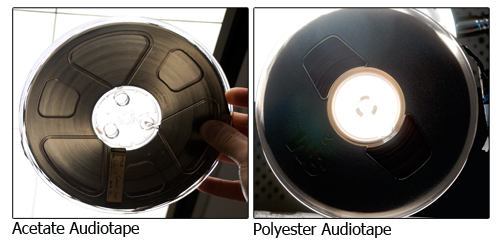

Audiovisual Formats
Cassette, Cartidge-Based and Open Reel Audio
Printable PDF version of this page
Cassette and Cartridge-Based Audio

Continuous Loop
Cartridges (Cart)

Compact Cassette

Microcassette

8-track

Digital Audio Tape (DAT)

Digital Compact
Cassette
Open Reel Audio

2" Open Reel

1" Open Reel

1/2" Open Reel

1/4" Open Reel
General Magnetic Audio Considerations:
Tape Speed: All tapes are recorded at a particular speed, measured in inches per second (ips), and must be played back at that speed for optimum audio quality. Generally, higher-speed recordings have better sound quality. Lower-speed tapes tend to have decreased high-frequency, which increases the amount of noise or tape hiss. More recently developed high-speed cassettes, however, employ noise-reduction technology, such as DBX or Dolby, to reduce tape hiss. The most common playback/record speeds are: 15/16 ips, 1 7/8 ips, 3 3/4 ips, 7 1/2 ips, 15 ips, and 30 ips.
Tape Track Configuration: In addition to format configurations (tapes that will only play back on the machine they were built for), there are tape track configurations, or layouts. It is often difficult to discern the tape track configuration of non-commercial and/or master tapes unless this information has been documented. Track configuration can also be determined by using a magnetic viewer such as the Arnold B-1022 (https://www.arnoldmagnetics.com/v2/sales/Product.aspx?id=238), which makes the signal recorded on the tape visible. It is essential that the playback head is the same configuration as the track to optimize playback; otherwise recording information is lost or represented incorrectly. Below is a list of the most common tape track configurations as applied most commonly to 1/4" tape:
- Full Track (monaural): Has one track and one channel; is typically found on 1/4" reel-to-reel tape but can pertain to any width tape.
- Half Track (also known as two track monaural): two tracks are recorded in opposite directions, with one channel each; is found on 1/4" reel-to-reel and monaural cassettes.
- Twin Track (also known as "two-track" or "two-track stereo"): Two tracks are found going in the same direction, with each track as a channel; typically found on 1/4" reel-to-reel, but can also be used as a half-track mono.
- Quarter Track (also known as four-track stereo): Four tracks are found in alternating directions: the 1st and 3rd tracks comprise "SIDE A" and the 2nd and 4th tracks comprise "SIDE B." Tape stock is 1/4" wide. Note: channel 1 = side A left; channel 2 = side B left; channel 3 = side A right; channel 4 = side B right.
- Four Track (also known as four-track quad): There are four tracks, each going in the same direction and each comprising its own channel. Can be found in 1/4" and 1/2" reel-to-reel. These should be left smoothly wound "tails out" (backwards), according to professional applications and environments.
- Stereo cassette (Phillips, aka "standard format" or "compact cassette"): There are four tracks, with the 1st and 2nd tracks as "SIDE A"' and the 3rd and 4th tracks as "SIDE B." Tape stock is 1/8" wide.
- 8-track stereo cartridge: There are eight tracks, each in its own channel and going in the same direction, making 4 sides. Tape stock is 1/4" wide. Sixteen track is found on 1" and 2" reel-to-reel. Twenty-four track is found on 2" reel-to-reel (Stauderman, 2003).
Continuous Loop Cartridges (Cart)
Description: Continuous loop cartridge (cart) is a magnetic tape-based recorded sound format. The tape is composed of magnetic particles (or pigment), binder, and a base. Carts are composed of 1/4 inch plastic oxide-coated recording tape wound around a single internal reel and housed in a plastic enclosure. Although carts appear similar to an 8-track, they are distinctly different and are identifiable by a fairly large hole in the lower left backside of the cartridge. Cartridge dimensions are generally 5.25" x 4" x 0.93" (NAB A type) but can be found in both smaller and larger sizes (NAB type B and C) depending upon end use and tape length.
History Continuous loop cartridges for automatic playback were introduced in the 1950s and were in use primarily in broadcasting until the 1990s. Some major tape manufacturers include Mackenzie Program Repeater, Fidelipac, and Telex "Cart" (Stauderman, 2003).
Prone to the Following Problems Magnetic tape is susceptible to physical, biological, and chemical risks such as stretching, breaking, drop-outs, mold, and binder deterioration. Additionally, due to binder lubrication and wind issues, carts are subject to binding and tension problems.
Risk Level Inherent in Format Continuous loop cartridges are especially susceptible to risks associated with age, hardware, and equipment obsolescence. As carts have been largely replaced by digital technology, the media and related playback equipment are largely obsolete. Since carts are often found in broadcast and other working environments, they most likely have been subject to heavy use. Frequent playback wears down the media and degrades the sound quality over time. This format is especially vulnerable and based on content assessment should be prioritized for reformatting.
Issues Related to Playback Each audiovisual medium requires equipment to decode the information held within it. The oldest carts, the Audiovendor, were playable on an open reel machine. Subsequent cartridges required proprietary playback equipment until 1964, with the implementation of the National Association of Broadcasters (NAB) audio cartridge standard. Although most carts resemble a commercial 8-track cartridge, they cannot be played back on an 8-track machine. Most carts have tape configurations of mono or two-track stereo; both configurations hold a third cueing track. NAB carts have a typical playback speed of 7.5 inches per second (ips); however, playback speed can range from 3.75 ips to 15 ips. Due to the single reel design, carts cannot be rewound; however, fast-forward is possible if the playback machine has the functionality to do so.
Recommended Storage Conditions(+/- 2)
| Best Temp (degrees F) | Good Temp (degrees F) |
|---|---|
| 40-54 º | 55-60 º |
Compact Cassette
Description: Compact cassette is a magnetic tape-based recorded sound format. The tape is composed of magnetic particles (or pigment), binder, and a polyester base. Cassettes are composed of 1/8 inch plastic pigment-coated recording tape wound around two internal reels and housed in a plastic enclosure. Ferric oxide is the most common pigment; other pigments include chromium dioxide, metal particle, and metal evaporated tape (Stauderman, 2003). Cassette dimensions are approximately 4" x 2.5" x .5".
History The compact cassette was introduced in by Philips in the early 1960s. The gained popularity in the mid 1970s and prevailed until the late 1990s when CDs and other digital formats began to supplant it in the marketplace.
Prone to the Following Problems Magnetic tape is susceptible to physical, biological, and chemical risks such as stretching, breaking, drop-outs, improper wind, mold, binder deterioration, and unintended recording. Compact cassettes with tape lengths of longer than 90 minutes are especially prone to print-through, stretching, and breaking as the tape is thinner than shorter length tapes. Frequent playback wears on the media and degrades the sound quality over time. This medium is especially susceptible to damage from playback as it may jam in the playback deck and be "eaten," which can cause crimping and breaking during playback. Internal cassette elements such as pads and rollers are susceptible to damage. Cassette housings can be repaired and replaced in the event of damage. Doreen Bolnick and Bruce Johnson's (1989) article "Audiocassette Repair" (Library Journal, 114(19), pp. 43-46) is an excellent resource if you are interested in learning about repairing your own compact cassettes.
Risk Level Inherent in Format The lifespan of a cassette is dependent upon numerous factors: the quality of the original tape, the type and condition of the machine on which it is played, the amount of care the tapes are given, how often they are played, and how they are packaged. Environmental conditions, especially heat, dust, and humidity, may also affect cassettes (Bolnick & Johnson, 1989). As this format is greatly declining in popularity, media and equipment obsolescence may become a risk; however, at present time both media and equipment are available in the marketplace. Frequent playback wears on the media and, with each playback, degrades the sound quality. The compact cassette medium is not considered an archival format due to its very limited projected lifespan of 10 to 30 years, in addition to its various technological issues. This format is vulnerable and, based on content assessment, should be prioritized for reformatting. Standard analog audio cassettes are not suitable for preservation work under any circumstances (Paton, 1998).
Issues Related to Playback All audiovisual media require equipment to decode the information held within it. Most compact cassettes have a playback speed of 1 7/8 ips; however, some recorders were designed to optionally record and play back at 3 3/4 ips for better fidelity (Stauderman, 2003). The track configuration is often four-track stereo, where tracks 1 and 2 compose "Side A" and tracks 3 and 4 compose "Side B." Some home-recording enthusiasts may use a four-track recorder to create multi-track recordings. On these tapes, there are four tracks, all recorded in the same direction. Noise reduction technologies were developed in order to reduce the noise or tape hiss commonly found on thinner tapes recorded at slow speeds. Noise reduction technologies most commonly found on compact cassettes are Dolby (B, C, and S) and dbx (Type II). If a tape has been recorded using noise reduction, the playback equipment must have corresponding noise reduction capabilities in order to accurately play back the tape content. It is often very difficult to determine if a tape has been recorded with noise reduction without having documentation indicating so.
Recommended Storage Conditions(+/- 2)
| Best Temp (degrees F) | Good Temp (degrees F) |
|---|---|
| 40-54 º | 55-60 º |
Microcassette
Description: Microcassette is a magnetic tape-based recorded sound format. The tape is composed of magnetic particles (or pigment), binder, and a polyester base (Stauderman, 2003). Ferric oxide is the most common pigment; other pigments include chromium dioxide, metal particle, and metal evaporated tape (Stauderman, 2003). Cassette dimensions are approximately 1 7/8" x 1 1/4" with a tape width of 1/8".
History The microcassette was introduced to the consumer market in 1969 by Olympus. It offered recording times comparable to standard audio cassettes but in a compact form. It is used primarily for voice recording through microcassette recorders and telephone answering machines. This format may be found in research files and oral history collections.
Prone to the Following Problems Since the tape is extremely thin, microcassettes are especially prone to breakage and stretching. As with other magnetic media, microcassettes are susceptible to physical , biological, and chemical risks such as stretching, breaking, drop-outs, improper wind, mold, binder deterioration, and unintended recording. Frequent playback wears on the media and, with each playback over time, degrades the sound quality. This medium is especially susceptible to damage from playback as it may jam in the playback deck and be "eaten," which can cause crimping and breaking during playback.
Risk Level Inherent in Format The lifespan of a cassette is dependent upon numerous factors: the quality of the original tape, the type and condition of the machine on which it is played, the amount of care the tapes are given, how often they are played, and how they are packaged. The environmental conditions, especially heat, dust, and humidity, may also affect cassettes (Bolnick and Johnson, 1989). Due to the relative fragility of the media, microcassettes have a projected lifespan of 2-10 years (Tadic, 2001). As this format is greatly declining in popularity, media and equipment obsolescence has become a risk; however, at present both media and equipment are available in the marketplace. This format is vulnerable and, based on content assessment, should be prioritized for reformatting.
Issues Related to Playback Microcassette recorders often recorded at 15/16 ips; however, most recorders offered the option to record at variable speeds. Specific playback equipment corresponding to the media is required to access the content on these cassettes.
Recommended Storage Conditions(+/- 2)
| Best Temp (degrees F) | Good Temp (degrees F) |
|---|---|
| 40-54 º | 55-60 º |
8-track
Description: The Stereo-8 cartridge (or 8-track) is a magnetic tape-based recorded sound format. The tape is composed of magnetic particles (or pigment), binder, and a polyester base (Stauderman, 2003). Ferric oxide is the most common pigment; other pigments include chromium dioxide, metal particle, and metal evaporated tape (Stauderman, 2003). Cartridge dimensions are generally 5.25" x 4" x 0.8" with a tape width of 1/4".
History The Stereo-8 cartridge, more commonly known as the 8-track tape or 8-track, was developed by Bill Lear and was a popular format from the mid 1960s through the early 1980s. It evolved from the Muntz 4-track and Fidelipac cartridges. It gained its earliest popularity in the mid 1960s with RCA/Victor releasing commercial music on the format and Ford installing optional 8-track players on some of its automobiles. Eight-tracks were used mostly for commercial releases.
Prone to the Following Problems As with other magnetic media, 8-tracks are susceptible to physical, biological, and chemical risks such as stretching, breaking, drop-outs, improper wind, mold, and binder deterioration. The format is also especially susceptible to tape binding due to lubrication loss and jamming in the playback machine.
Risk Level Inherent in Format Eight-track media and playback equipment are long obsolete. Most recording companies discontinued the release of 8-track media by the early 1980s; the manufacture of playback equipment began to decline in the mid to late 1970s, as compact cassettes became more popular.
Issues Related to Playback Eight-track tapes are recorded at a speed of 3.75 ips. The audio is recorded and played back in two-channel stereo with a tape track configuration of eight tracks, each in its own channel going in the same direction, making 4 sides (Stauderman, 2003). Since the tracks are so thin and close together and because the playback heads move between the pairs of tracks, the heads often become misaligned. When this misalignment occurs, echoes of adjacent tracks may be heard during playback. Specific playback equipment corresponding to the media is required to access the content.
Recommended Storage Conditions(+/- 2)
| Best Temp (degrees F) | Good Temp (degrees F) |
|---|---|
| 40-54 º | 55-60 º |
Digital Audio Tape (DAT)
Description: Digital Audio Tape (DAT) is a digital magnetic tape-based recorded sound format. The tape is composed of magnetic particles (or pigment), binder, and a base. Bases can be made of paper (c. 1946), polyvinyl chloride or PVC (1946 to mid-1950s) or polyester (mid-50s to present) (Stauderman, 2003). Ferric oxide is the most common pigment; others include chromium dioxide, metal particle, and metal evaporated tape (Stauderman, 2003). The dimensions of the shell are 73 mm × 54 mm × 10.5 mm with a tape width of 4mm.
History Digital Audio Tape, or DAT, was developed by the Sony Corporation and was available by the late 1980s. It was once the preferred method for live compact recording and studio backup; however, the copyright amendment of the Audio Home Recording Act of 1992, which levied a royalty on DAT recorders and media, and the availability and affordability of computer and expansive hard drive space contributed to making DAT obsolete. Playback equipment is no longer in production.
Prone to the Following Problems The biggest risk to DAT is format and playback equipment obsolescence. The lifespan of the cassette is dependent upon numerous factors: the quality of the original tape, the type and condition of the machine on which it is played, the amount of care the tapes are given, how often they are played, and how they are packaged. The environmental conditions, especially heat, dust, and humidity, may also affect cassettes (Bolnick and Johnson, 1989). DAT has known playback problems, typically related to mechanical alignment. DAT is not an archival format. Based on content value, these tapes should be given reformatting priority.
Risk Level Inherent in Format DAT has known playback problems, typically related to mechanical alignment. Specific playback equipment corresponding to the media is required to access the content.
Issues Related to Playback Each audiovisual medium requires equipment to decode the information held within it.
Recommended Storage Conditions(+/- 2)
| Best Temp (degrees F) | Good Temp (degrees F) |
|---|---|
| 40-54 º | 55-60 º |
Digital Compact Cassette
Description: Digital Compact Cassette (DCC) is a magnetic tape-based moving image format. The tape is composed of magnetic particles (chromium dioxide- or cobalt- doped ferric-oxide) (Philips Electronics N.V., 1996), a binder, and a polyester base (Stauderman, 2003). DCC uses PASC (Precision Adaptive Sub-band Coding) compression in order to store the amount of information required for CD-quality sound on an audiotape. The cassette cartridge and tape width is the same as an analog compact cassette (approximately 4" x 2.5" x .5" with a 1/8" tape). The cassettes look similar to analog audio cassettes except they only have access holes for the transport hubs on one side. Also, the tape path is shielded by a metal slider similar to those found on a 3.5 inch floppy disc.
History Digital Compact Cassettes (DCC) were introduced in the early 1990s. It was a format meant to supplant the analog audio tape and compete with MiniDisc and Digital Audio Tapes (DAT). Playback machines were backward-compatible; they supported playback for analog cassettes as well as DCC. It was a popular format in Europe. Philips discontinued manufacturing DCC tapes and playback in equipment in 1996, having lost the "format war" to MiniDisc.
Prone to the Following Problems The biggest risk to DCC is format and playback equipment obsolescence. The lifespan of the cassette is dependent upon numerous factors: the quality of the original tape, the type and condition of the machine on which it is played, the amount of care the tapes are given, how often they are played, and how they are packaged. Environmental conditions, especially heat, dust, and humidity, may also affect cassettes (Bolnick & Johnson, 1989).
Risk Level Inherent in Format DCC and associated playback equipment are long obsolete. Based on content value, these tapes should be given reformatting priority.
Issues Related to Playback DCCs must be played back on format-specific equipment. It is not compatible with analog cassette decks.
Recommended Storage Conditions(+/- 2)
| Best Temp (degrees F) | Good Temp (degrees F) |
|---|---|
| 40-54 º | 55-60 º |
2" Open Reel
Description: Two inch open reel audio is a magnetic tape-based recorded sound format. The tape is composed of magnetic particles, binder, and a base of either paper, acetate, or polyester (Forgas, 1997). During the 1940s and 1950s, cellulose acetate was the most common tape base (Paton, 1998). Acetate bases can be differentiated from polyester bases by conducting a quick light test. Hold the reel up to a light source—if light "pipes" through, the base is most likely acetate. Reel size can vary, measuring from 2 or 3 inches to 10.5 inches in diameter (14 inch diameters are also possible), with 5, 7, and 10.5 inches being the most common sizes found in archives (Paton, 1998). The tape width is approximately 2".
History Open reel audiotape was developed in Germany in the late 1930s. After WWII, it was further developed in the US by Ampex and EMI, when it began to gain worldwide popularity. Open reel formats with larger tape widths (1/2" and above) and recorded at faster speeds (7 1/2 ips and above) are most commonly found in professional broadcasting and recording environments.
Prone to the Following Problems Two inch open reel audio is susceptible to risks associated with age, hardware, and equipment obsolescence. Like other types of magnetic media, it is prone to risks such as mold, binder deterioration, physical damage, signal drop-outs, and, in the case of acetate-based tapes, base deterioration.
Tapes should be wound tightly and evenly. An uneven tape pack can allow dirt to come in contact with and abrade the tape's surface and edges. Unevenly wound tapes can cause the tape to warp and lose its shape, which will affect playback sound quality.
Tapes are also prone to blocking or pinning, which occurs when layers of tape adhere to adjacent layers. Blocking involves large sections of tape adhered together, while pinning involves small sections. Both blocking and pinning can result in loss of information by damaging the tape layers or by preventing playback. Other issues are print through, binder hydrolysis (aka Sticky Shed Syndrome) and, in the case of acetate based tapes, vinegar syndrome.
Risk Level Inherent in Format Reel-to-reel audio playback equipment and media are becoming scarce, although there are a few manufacturers who are still filling the needs of professional audio studios. Since magnetic media is a dying medium with a limited lifespan, these tapes should be reformatted (based on the content value).
Issues Related to Playback In order to play back a tape properly, you must know the tape track configuration and recording speed. Playback equipment must have a tape transport able to support the full width of the tape, in addition to the proper playback head configuration, to read all the tracks encoded on the tape.
Recommended Storage Conditions(+/- 2)
| Best Temp (degrees F) | Good Temp (degrees F) |
|---|---|
| 40-54 º | 55-60 º |
1" Open Reel
1" Open Reel (video shown)
Description: One inch open reel audio is a magnetic tape-based recorded sound format. The tape is composed of magnetic particles, binder, and a base of either paper, acetate, or polyester (Forgas, 1997). During the 1940s and 1950s, cellulose acetate was the most common tape base (Paton, 1998). Acetate bases can be differentiated from polyester bases by conducting a quick light test. Hold the reel up to a light source—if light "pipes" through, the base is most likely acetate. Reel size can vary, measuring from 2 or 3 inches to 10.5 inches in diameter (14 inch diameters are also possible), with 5, 7, and 10.5 inches being the most common sizes found in archives (Paton, 1998). The tape width is approximately 1". Audio recordings made on 1" tape may be mistaken for videotape.
History Open reel audiotape was developed in Germany in the late 1930s. After WWII, it was further developed in the US by Ampex and EMI, when it began to gain worldwide popularity. Open reel formats with larger tape widths (1/2" and above) and recorded at faster speeds (7 1/2 ips and above) are most commonly found in professional broadcasting and recording environments.
Prone to the Following Problems One inch open reel audio is susceptible to risks associated with age, hardware, and equipment obsolescence. Like other types of magnetic media, it is prone to risks such as mold, binder deterioration, physical damage, signal drop-outs, and, in the case of acetate-based tapes, base deterioration.
Tapes should be wound tightly and evenly. An uneven tape pack can allow dirt to come in contact with and abrade the tape's surface and edges. Unevenly wound tapes can cause the tape to warp and lose its shape, which will affect playback sound quality.
Tapes are also prone to blocking or pinning, which occurs when layers of tape adhere to adjacent layers. Blocking involves large sections of tape adhered together, while pinning involves small sections. Both blocking and pinning can result in loss of information by damaging the tape layers or by preventing playback. Other issues are print through, binder hydrolysis (aka Sticky Shed Syndrome) and, in the case of acetate based tapes, vinegar syndrome.
Risk Level Inherent in Format Reel-to-reel audio playback equipment and media are becoming scarce, although there are a few manufacturers who are still filling the needs of professional audio studios. Since magnetic media is a dying medium with a limited lifespan, these tapes should be reformatted (depending on the value of the content).
Issues Related to Playback In order to play back a tape properly, you must know the tape track configuration and recording speed. Playback equipment must have a tape transport able to support the full width of the tape, in addition to the proper playback head configuration, to read all the tracks encoded on the tape.
Recommended Storage Conditions(+/- 2)
| Best Temp (degrees F) | Good Temp (degrees F) |
|---|---|
| 40-54 º | 55-60 º |
1/2" Open Reel
1/2" Open Reel (video shown)
Description: Half inch open reel audio is a magnetic tape-based recorded sound format. The tape is composed of magnetic particles, binder, and a base of either paper, acetate, or polyester (Forgas, 1997). During the 1940s and 1950s, cellulose acetate was the most common tape base (Paton, 1998). Acetate bases can be differentiated from polyester bases by conducting a quick light test. Hold the reel up to a light source—if light "pipes" through, the base is most likely acetate. Reel size can vary, measuring from 2 or 3 inches to 10.5 inches in diameter (14 inch diameters are also possible), with 5, 7, and 10.5 inches being the most common sizes found in archives (Paton, 1998). The tape width is approximately 1/2".
History Open reel audiotape was developed in Germany in the late 1930s. After WWII, it was further developed in the US by Ampex and EMI, when it began to gain worldwide popularity. Open reel formats with larger tape widths (1/2" and above) and recorded at faster speeds (7 1/2 ips and above) are most commonly found in professional broadcasting and recording environments.
Prone to the Following Problems Half inch open reel audio is susceptible to risks associated with age, hardware, and equipment obsolescence. Like other types of magnetic media, it is prone to risks such as mold, binder deterioration, physical damage, signal drop-outs, and, in the case of acetate-based tapes, base deterioration.
Tapes should be wound tightly and evenly. An uneven tape pack can allow dirt to come in contact with and abrade the tape's surface and edges. Unevenly wound tapes can cause the tape to warp and lose its shape, which will affect playback sound quality.
Tapes are also prone to blocking or pinning, which occurs when layers of tape adhere to adjacent layers. Blocking involves large sections of tape adhered together, while pinning involves small sections. Both blocking and pinning can result in loss of information by damaging the tape layers or by preventing playback. Other issues are print through, binder hydrolysis (aka Sticky Shed Syndrome) and, in the case of acetate based tapes, vinegar syndrome.
Risk Level Inherent in Format Reel-to-reel audio playback equipment and media are becoming scarce, although there are a few manufacturers who are still filling the needs of professional audio studios. Since magnetic media is a dying medium with a limited lifespan, these tapes should be reformatted (based on the content value).
Issues Related to Playback In order to play back a tape properly, you must know the tape track configuration and recording speed. Playback equipment must have a tape transport able to support the full width of the tape, in addition to the proper playback head configuration, to read all the tracks encoded on the tape.
Recommended Storage Conditions(+/- 2)
| Best Temp (degrees F) | Good Temp (degrees F) |
|---|---|
| 40-54 º | 55-60 º |
1/4" Open Reel
Description: Quarter inch open reel audio is a magnetic tape-based recorded sound format. The tape is composed of magnetic particles, binder, and a base of either paper, acetate, or polyester (Forgas, 1997). During the 1940s and 1950s, cellulose acetate was the most common tape base (Paton, 1998). Acetate bases can be differentiated from polyeste r bases by conducting a quick light test. Hold the reel up to a light source - if light "pipes" through, the base is most likely acetate. Reel size can vary, measuring from 2 or 3 inches to 10.5 inches in diameter (14 inch diameters are also possible), with 5, 7, and 10.5 inches being the most common sizes found in archives (Paton, 1998). The tape width is approximately 1/4".
History Open reel audiotape was developed in Germany in the late 1930s. After WWII, it was further developed in the US by Ampex and EMI, when it began to gain worldwide popularity. Quarter inch open reel tapes were used in home recording and other semi-pro and consumer markets. Prior to digital technology, 1/4" open reel tape was considered the standard audio preservation medium. As analog tape and equipment are obsolete, digital capture has become the archival standard.
Prone to the Following Problems Quarter inch open reel audio is susceptible to risks associated with age, hardware, and equipment obsolescence. Like other types of magnetic media, it is prone to risks such as mold, binder deterioration, physical damage, signal drop-outs, and, in the case of acetate-based tapes, base deterioration. Quarter inch tape may be thinner and more fragile than other kinds of tape, and is more susceptible to stretching and breaking during playback.
Tapes should be wound tightly and evenly. An uneven tape pack can allow dirt to come in contact with and abrade the tape's surface and edges. Unevenly wound tapes can cause the tape to warp and lose its shape, which will affect playback sound quality. Tapes with thinner widths are more susceptible to information loss when the tape edge is damaged, as magnetic track configurations are smaller and placed more closely to the tape edge.
Tapes are also prone to blocking or pinning, which occurs when layers of tape adhere to adjacent layers. Blocking involves large sections of tape adhered together, while pinning involves small sections. Both blocking and pinning can result in loss of information by damaging the tape layers or by preventing playback.
Risk Level Inherent in Format Reel-to-reel audio playback equipment and media are becoming scarce, although there are a few manufacturers who are still filling the needs of professional audio studios. Since magnetic media is a dying medium with a limited lifespan, these tapes should be reformatted (based on the content value).
Issues Related to Playback In order to play back a tape properly, you must know the tape track configuration and recording speed. Playback equipment must have a tape transport able to support the full width of the tape, in addition to the proper playback head configuration, to read all the tracks encoded on the tape.
Recommended Storage Conditions(+/- 2)
| Best Temp (degrees F) | Good Temp (degrees F) |
|---|---|
| 40-54 º | 55-60 º |
Open Reel Audio Tape - Base Material
Paper
Early audiotape may use paper as the carrier layer. This tape can be very fragile and should be duplicated or digitized whenever possible.
Acetate
Acetate-based tape was fairly common during the early days of
magnetic audio recording. These tapes, like acetate motion
picture film, can suffer from acetate decay or
"vinegar syndrome." Unlike acetate motion picture
film, acetate-based magnetic tapes cannot be frozen without
causing damage to the information layer of the tape. Because
of this, acetate decay cannot be halted. This is why in terms
of bases, AvSAP considers acetate-based tapes to be of the
highest priority for reformatting and preservation. You can
identify acetate tape by holding it in front of a light
source.
If appears to "glow" or pipe light, it is most
likely acetate.

Polyester
Polyester is the most common and stable base for audiotape. In terms of bases, AvSAP considers polyester to be the lowest priority for reformatting and preservation. You can identify polyester by placing the tape pack in front of a light source. If the tape pack appears opaque, that is, you cannot see light through it, it is most likely polyester.
 This page is part of the Audiovisual Self-Assessment Program (AvSAP), an IMLS-funded audiovisual preservation assessment tool. AvSAP was designed at the University of Illinois at Urbana-Champaign Library. More information about AvSAP and a link to the program can be found here:
This page is part of the Audiovisual Self-Assessment Program (AvSAP), an IMLS-funded audiovisual preservation assessment tool. AvSAP was designed at the University of Illinois at Urbana-Champaign Library. More information about AvSAP and a link to the program can be found here:
http://www.library.illinois.edu/prescons/services/av_self_assesment_program.html